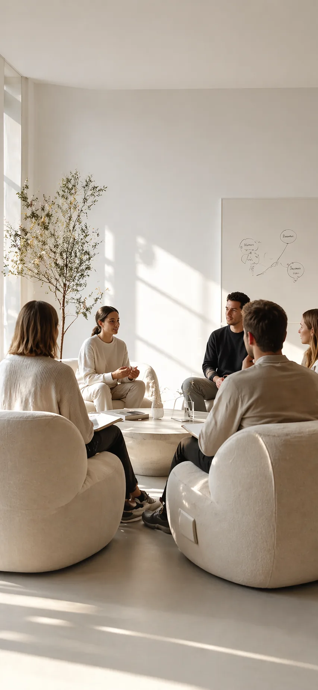

Базовый маршрут
Понять себя
Понять себя
глубже
Это главный маршрут Системы. Он для тех, кто хочет разобраться: что я чувствую, чего на самом деле хочу и почему повторяются одни и те же сценарии.
Это главный маршрут Системы. Он для тех, кто хочет разобраться: что я чувствую, чего на самом деле хочу и почему повторяются одни и те же сценарии.
Вспышки, заморозка или «ничего не чувствую» — программа учит распознавать и проживать эмоции, а не подавлять их.
Потребности спрятаны за «надо» и чужими ожиданиями. Гештальт-подход возвращает контакт с собственными желаниями.
Сложно говорить «нет» и замечать, где заканчиваюсь я и начинается другой. Здесь этому учат на практике.
Система не разбрасывает внимание: основная программа задаёт глубину, дополнительная — поддерживает. AI-помощник поможет выбрать, с чего начать.

Основная программаЭмоции, потребности, контакт и границы. Последовательный видео-курс: от теории контакта до практик возвращения к себе.
Открыть в Системе ДополнительнаяВнимание, трансовые состояния и безопасная работа с внушением. Расширяет основную программу работой с состояниями.
Открыть в СистемеМаршрут «Понять себя глубже» появится на главном экране: следующий шаг всегда перед глазами, без поиска по библиотеке.
Знает каждый урок направления: объяснит сложное место, ответит на вопрос по материалу и подскажет практику под состояние.
Медитации, марафоны и общий чат поддерживают ритм — путь легче, когда рядом живые люди.
Регистрация занимает минуту. Система соберёт первый шаг — останется только начать.
 Спокойствие
Спокойствие
 Тело и симптомы
Тело и симптомы
 Отношения
Отношения
 Самооценка и опора
Самооценка и опора
 Коммуникация и конфликты
Коммуникация и конфликты